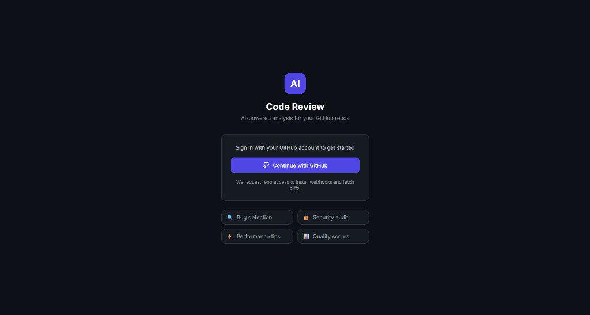

AI-Powered Code Review Assistant
I built a tool that starts an automated review from a GitHub pull request. It checks the code against predefined rules and shows live progress and structured findings in a React dashboard.

Overview
I built this project for my bachelor’s thesis to give developers early feedback on recurring issues during code review. Once a repository is connected, a GitHub webhook starts a review when someone opens or reopens a pull request or pushes new commits to it.
How a review runs
- Connect GitHub. Users sign in with GitHub OAuth 2.0 and connect a repository.
- Queue the review. The Node.js and Express backend verifies the webhook signature and queues a review for the pull request’s latest commit.
- Check the code. A worker fetches supported source files at that commit through the GitHub API and applies static rules.
- Show the results. Socket.IO sends live progress to the React dashboard. Supabase stores the review history and findings, including file paths, line numbers, and severity.
What the rules engine checks
The engine uses text patterns and heuristics to check supported JavaScript, TypeScript, and Vue files for issues such as debug statements and possible hard-coded secrets. If the repository snapshot is unavailable, the engine applies a separate set of checks to the diff, the lines changed between versions. The dashboard groups the findings and shows a quality score based on their severity.
My contribution
I built the React dashboard and the Node.js and Express backend, including GitHub sign-in, webhook verification, the review queue, and the static checks. I designed the Supabase tables for review history, wired up live updates with Socket.IO, and deployed the app on Render.
Screenshots


Design decisions
I ran analysis in a background worker so longer reviews wouldn’t hold up the webhook response. I used static checks so each finding could point to the rule it matched and the line that triggered it.
Future work
A future version could add a large language model for suggestions that take more of the surrounding code into account.